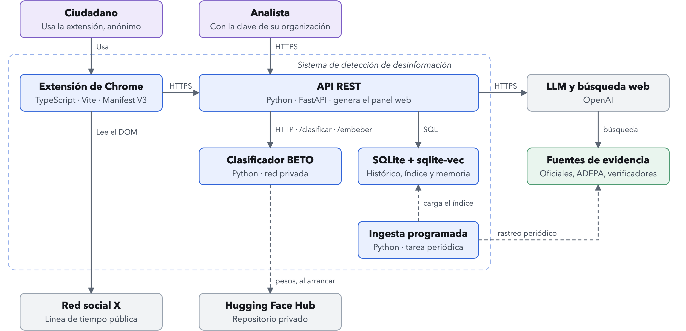
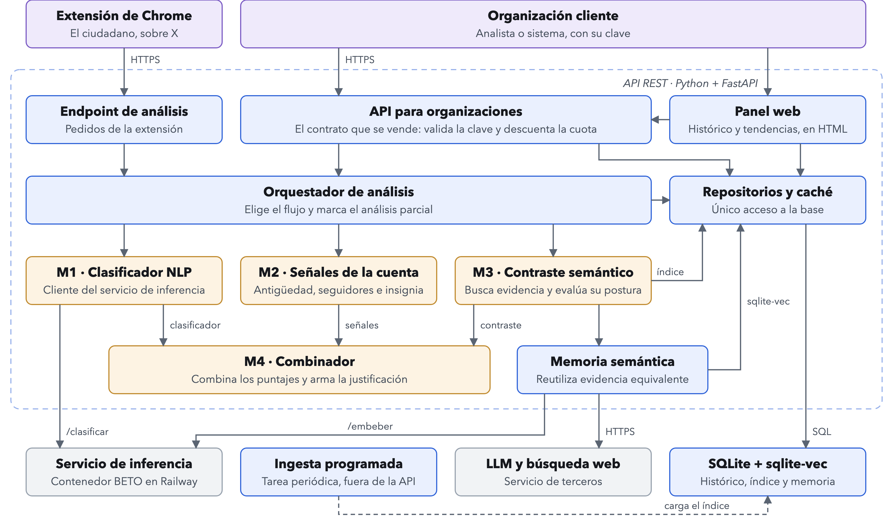
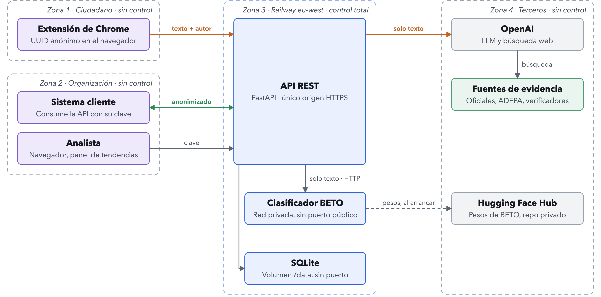
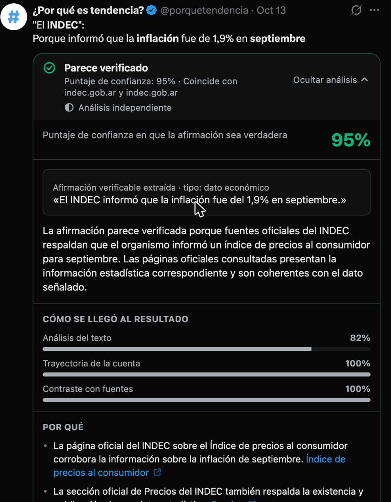
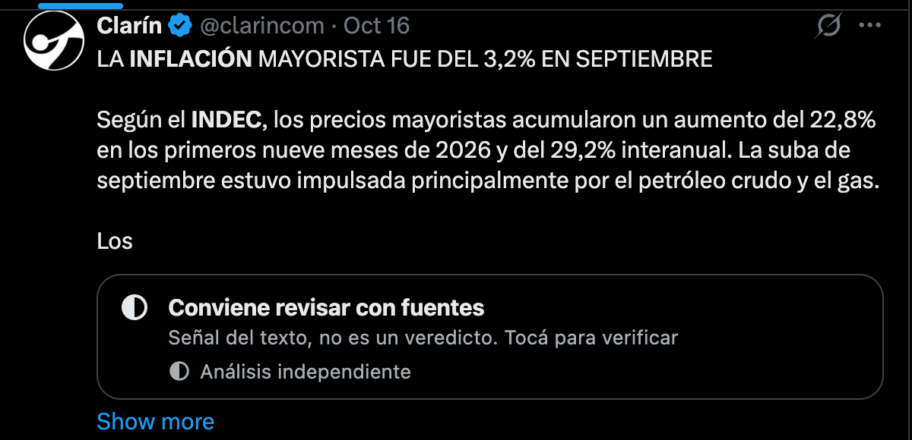

Ya hay más empleados públicos que privados registrados. Así no hay país.
Verificar esta publicaciónContradicho por fuentes oficialesSIPA · Secretaría de Trabajo
Seis publicaciones como las que circulan en X
Ya hay más empleados públicos que privados registrados. Así no hay país.
La inflación de 2023 fue de 211,4 %. La más alta desde 1990.
Desde 2021 el aborto es legal en la Argentina hasta la semana 14.
Con la Ley Bases privatizaron YPF. Listo, la regalaron.
El INDEC lo confirmó: 52,9 % de pobreza en el primer semestre de 2024.
Las vacunas contra el COVID traen un chip para rastrearte. No te la des.
Seis publicaciones como las que circulan en XFactum responde sobre cada una, con su fuente
Ya hay más empleados públicos que privados registrados. Así no hay país.
La inflación de 2023 fue de 211,4 %. La más alta desde 1990.
Desde 2021 el aborto es legal en la Argentina hasta la semana 14.
Con la Ley Bases privatizaron YPF. Listo, la regalaron.
El INDEC lo confirmó: 52,9 % de pobreza en el primer semestre de 2024.
Las vacunas contra el COVID traen un chip para rastrearte. No te la des.
Cada veredicto enlaza el documento de origen.
Llega adonde no llegan las Notas de la Comunidad.
Gratis para el ciudadano. Cyabra y Blackbird.AI venden solo a empresas.
5 análisis nuevos por mes
Lo viral sale de la caché
API desde USD 200 por mes
Panel de tendencias, USD 300
USD 1.716 al inicio, fondos propios · hasta USD 52.694 de inversores ángeles
El objetivo no es que el usuario le crea al veredicto, sino que pueda prescindir de él.
El sistema entrega el camino hacia la evidencia, no solamente la conclusión.





| Modelo | SFNC validación | SFNC prueba | Tuits argentinos |
|---|---|---|---|
| Línea base TF-IDF + LR | 0,806 | 0,734 | 0,451 |
| XLM-T con etapa en inglés | 0,823 | 0,704 | — |
| RoBERTuito | 0,761 | 0,558 | — |
| BETO | 0,876 | 0,760 | 0,422 |
| BETO adaptado con Chequeado | — | — | 0,518 |
| LLM sin ajuste | — | 0,873 | — |
| Sistema completo (pesos-v4) | — | — | 0,712 (IC 0,61–0,80) |
| Real \ veredicto | Verdadero | Falso | Sin contraste |
|---|---|---|---|
| Verdadera (46) | 45 | 0 | 1 |
| Falsa (48) | 25 | 23 | 0 |
Chequeado figuró entre las fuentes en 78 de los 94 análisis: el valor sobreestima el desempeño ante desinformación nueva. El 77 % del corpus es anterior a 2022.
| Qué | Resultado | Meta |
|---|---|---|
| Pruebas automatizadas del servicio | 137, cobertura del 93 % de las sentencias | — |
| Pruebas automatizadas de la extensión | 27 | — |
| Pruebas funcionales por caso de uso | 7 de 7 aprobadas; cubren 15 de 17 RF | — |
| Usabilidad (SUS, 3 participantes) | 74,2 | 68 · se cumple, como indicio |
| Análisis profundo, percentil 95 | 16,0 s (mediana 8,5 s) | 8 s · no se cumple |
| Memoria semántica, percentil 95 | 40 ms | 8 s · se cumple en esos aciertos |
| Señal automática por lotes, mediana | 0,85 s desde Buenos Aires | — |
| F1 macro del sistema (RNF-05) | 0,712 | 0,75 · no se cumple |
| Indicador | Optimista | Neutral | Pesimista |
|---|---|---|---|
| VAN (USD, tasa 25 %) | 833.353 | 63.935 | −94.162 |
| TIR | 5.551 % | 72,6 % | no definida |
| Payback simple / descontado (años) | 0,02 / 0,02 | 2,93 / 3,46 | no se recupera |
| Equilibrio / clientes en el año 5 | 17 / 97 | 23 / 41,5 | 21 / 15,5 |
| Necesidad máxima de financiamiento (USD) | 1.716 | 52.694 | 167.500 |
| Sensibilidad del neutral | VAN −20 % | VAN +20 % | Equilibrio |
|---|---|---|---|
| Costo por análisis (USD 0,0246) | 82.682 | 45.188 | +68 % |
| Precio de la API superior (USD 2.500) | 16.764 | 111.106 | −27 % |
| Captación de clientes | 56.258 | 100.473 | −37,5 % |
Mercado por año: TAM USD 5.024.800 · SAM USD 4.960.000 · SOM USD 369.400 (ingresos del año 5 del neutral).
| Producto | Segmento | Precio |
|---|---|---|
| Extensión | Ciudadano | Gratis, 5 análisis nuevos por mes |
| API, nivel inicial | Desarrollo y evaluación | 1.000 consultas por mes sin cargo |
| API, nivel intermedio | Medios pequeños y verificadores | USD 200 por mes, 5.000 consultas |
| API, nivel superior | Medios grandes y marcas | USD 1.500 a 5.000 por mes, 40.000 consultas |
| Excedente de la API | — | USD 0,04 por consulta |
| Panel de tendencias | Verificadores y observatorios | USD 300 por mes |
| Monitoreo electoral | Organismos y ONG | USD 10.000 a 50.000 por contrato |
| Dataset histórico | Universidades | USD 100 por mes |
Horas del tesista en el año 0: no se imputan al flujo. A valor de mercado, con cargas sociales, equivalen a USD 24.434. La inversión del año 0 es de USD 1.716. Precios contrastados con herramientas comparables, no con clientes.